|
|
HELP FIND THE FOLLOWING LOCATIONS
PAGE 11
DEPARTMENT S: Who Plays the Dummy? (John Gilling: Autumn 1968)
Wight Lane, near the village of Kensworth in Bedfordshire: The NATO convoy heads for Madrid. After Stewart Sullivan has leapt from the Mercedes, Jason King shoots at it from the Ford Mustang to deflate a tyre and stop the other vehicle (same junction, but with the vehicles heading north-west towards the B4541) .
(Spotted by Michael Richardson, October 2023)
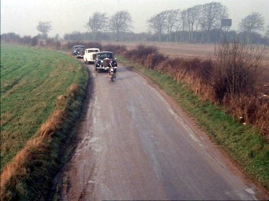
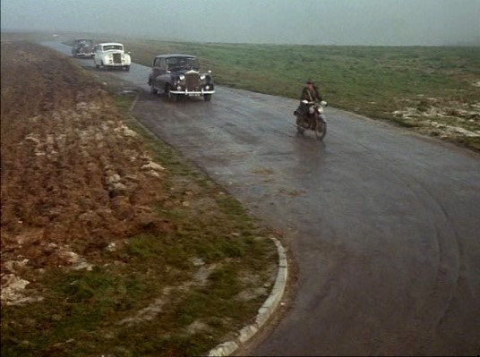
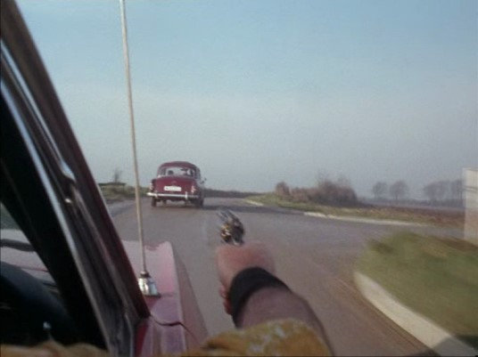
Unknown 1: Annabelle jumps to safety.
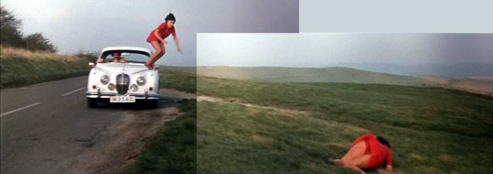
DEPARTMENT S: One of Our Aircraft is Empty (Paul Dickson: 1968)
Unknown 1 - Voss Industries plant in Ireland.
Unknown 2 - Voss Industries plant in Ireland.
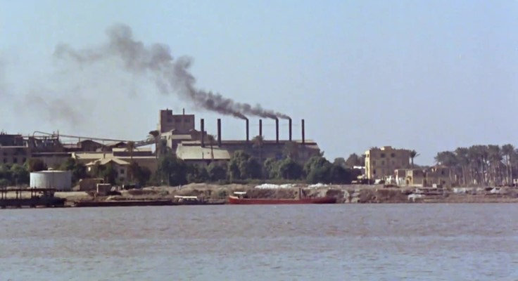
DEPARTMENT S: The Man in the Elegant Room (Cyril Frankel: Spring 1968)
A412 nr. Billet Lane junction: Paul Trenton’s Rolls Royce is seen heading to the abandoned farm. I don’t think its the A1.
(Spotted by Michael Richardson, confirmed bt Geoff Dodd, June 2023)
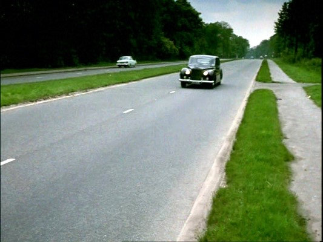
Unknown 1: Jason and Stewart in his Vauxhall accompanied by a police car go to rescue Annabelle.
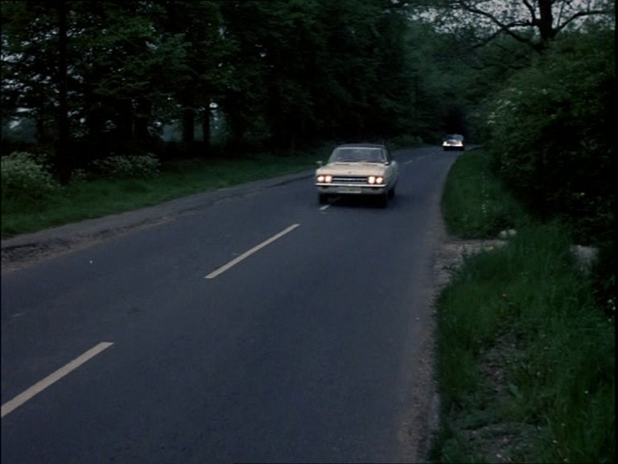
 Michael Richardson: Fulmer Common Road or
Pinewood Road, Iver
Heath?
Michael Richardson: Fulmer Common Road or
Pinewood Road, Iver
Heath?DEPARTMENT S: The Pied Piper of Hambledown (Roy Ward Baker: Summer 1968)
Stewart Sullivan sees someone in a first floor window when he first visits Colonel Loring’s manor house. Sullivan leaves in his Vauxhall, but once out of sight he stops and returned on foot.
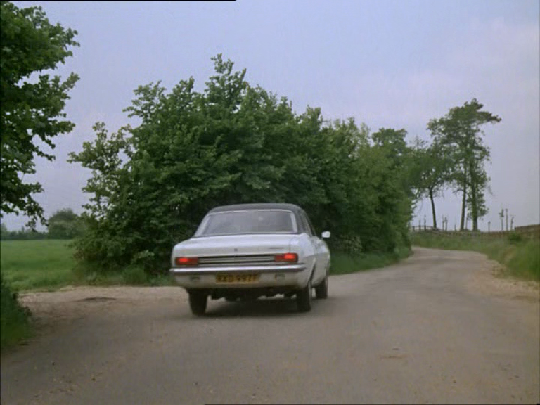
Michael
Richardson: No ideas where this could be, but I cannot find anything
around Letchmore Heath, Aldenham, Latimer or North Mymms Park where
other location filming took place for this episode. There appears to be
tracks or field entrances on both sides of the road where the Vauxhall
stopped, plus in the distance there is some fencing and what appears to
be tree saplings held up by wooden posts, not that this fact will help
us find it decades later.DEPARTMENT S: The Trojan Tanker (Ray Austin: June 1968)
2440 Av. Atlântica, Copacabana, Rio de Janeiro, Brazil: Establishing shot for Cannes.

Olympia Bob Run St. Moritz-Celerina, Grisons, Switzerland: Tag Scene
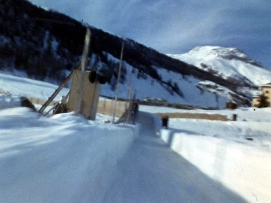
Unknown 1: Tag Scene
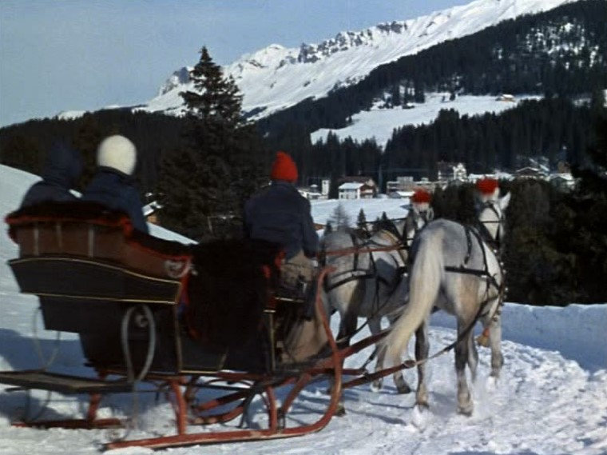
DEPARTMENT S: Blackout (Ray Austin: September 1968)
Cape Kennedy, Florida, USA: NASA footge seen on teleision.
Frank Borman and James A. Lovell going out in the NASA van to the launchpad to take-off in Gemini 7, December 4th 1965 - Identified by Maxwell Beckett
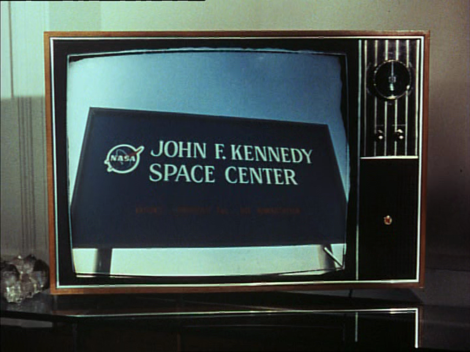
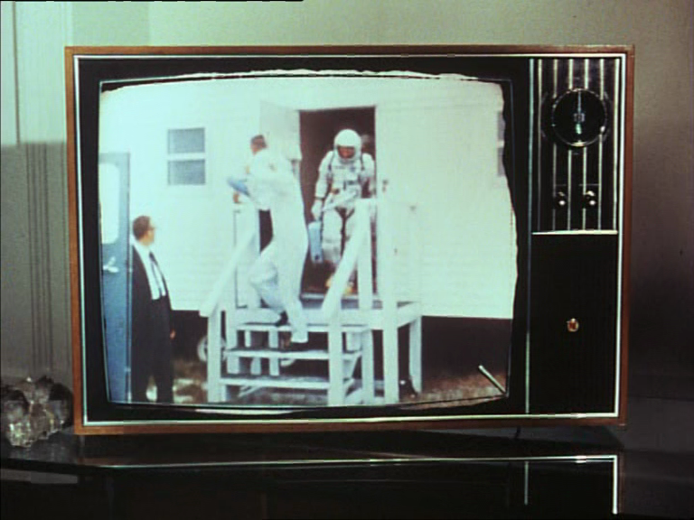
Think you know a spot? Need a bigger image? Email me.
< Previous | Index | Avengerland | Next >
Copyright © 2021 Anthony R. McKay